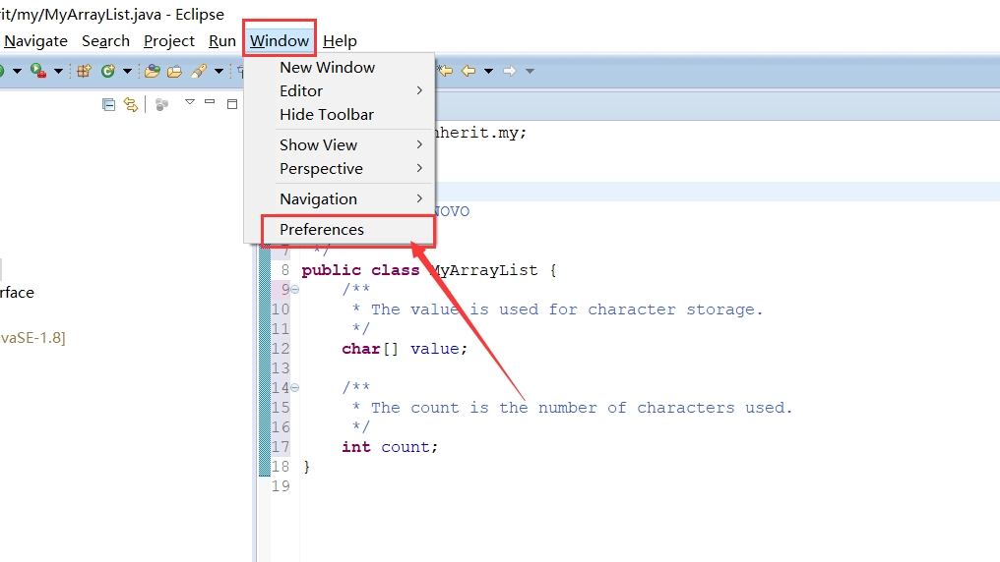
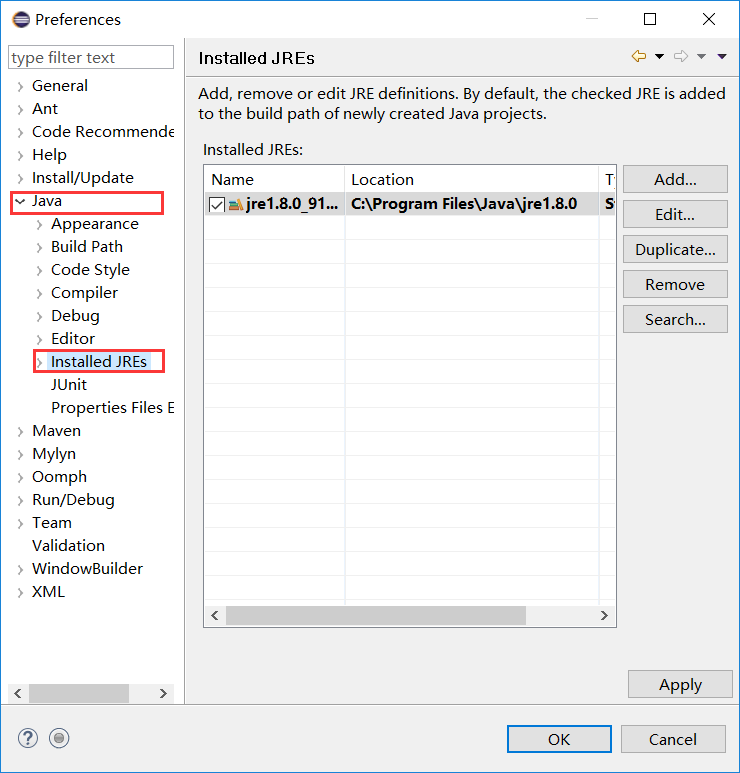
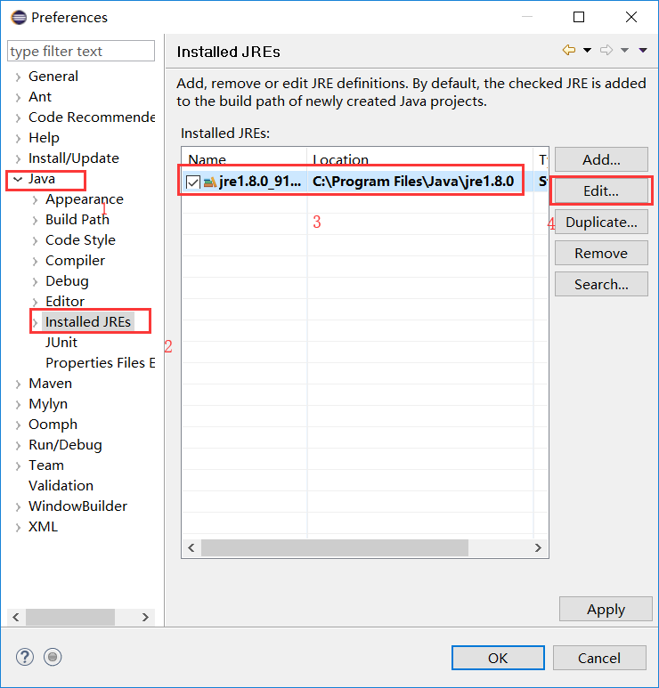
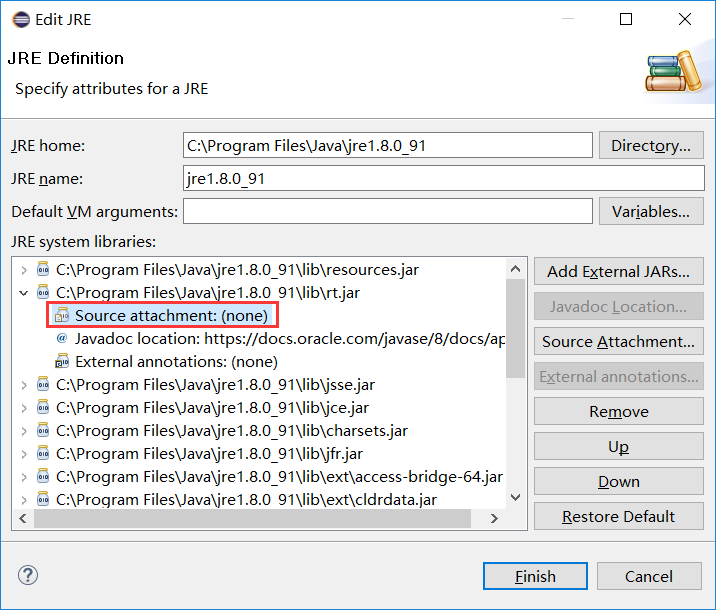
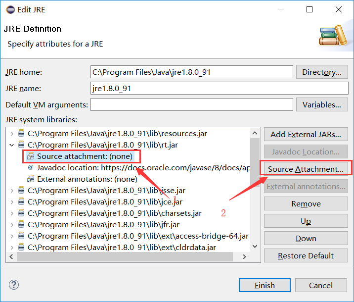
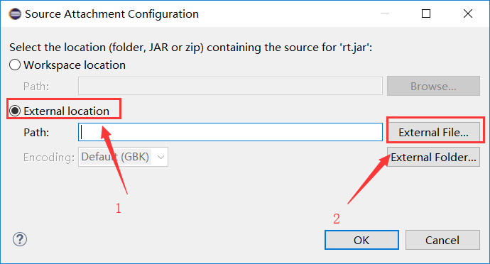
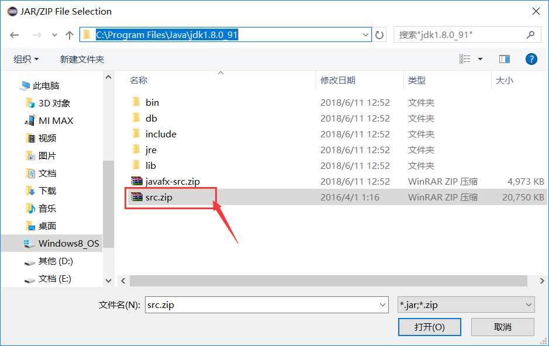

自己学习路上用过的方法，有帮助记得点赞哟~
Java eclipse中查看源代码ctrl+左键单击
一、你是第一次使用该功能，没有导入项目源码，故无法查看源码
解决方法：
1.点 “window“-> “Preferences”-> “Java” -> “Installed JRES”；


2.此时"Installed JRES"右边是列表窗格，列出了系统中的JRE 环境，选择你的JRE，然后点边上的“Edit...“， 会出现一个窗口(Edit JRE) ；

3.选中rt.jar文件的这一项：“C:\Program Files\Java\jre1.8.0_91\jre\lib\rt.jar” 点 左边的“+”号展开它（JDK实际安装路径以你的为准）；

4.展开后，可以看到“Source Attachment:(none)”，点这一项，点右边的按钮“Source Attachment...“，选择你的JDK目录下的 “src.zip”文件；



5.一路点“ok”结束。
二、之前可以通过ctrl + shift + t找对应的类，但是后来无法通过ctrl + shift + t找对应的类，并且类明明存在，并且也在编译路径下，但就是查找不到，一个可能的原因就是eclipse为类建立的索引出了问题。
解决的方法是：找到项目所在工作空间下的.metadata/.plugins/org.eclipse.jdt.core文件夹，将里面的*.index文件和savedIndexNames.txt文件删除，重启eclipse，然后eclipse会重建索引，这时问题就可以解决了。
解决方法来自这里：
http://www.java-forums.org/eclipse/6513-open-type-ctrl-shift-t-does-not-find-types.html
声明：
本文为转载：https://yq.aliyun.com/articles/643697